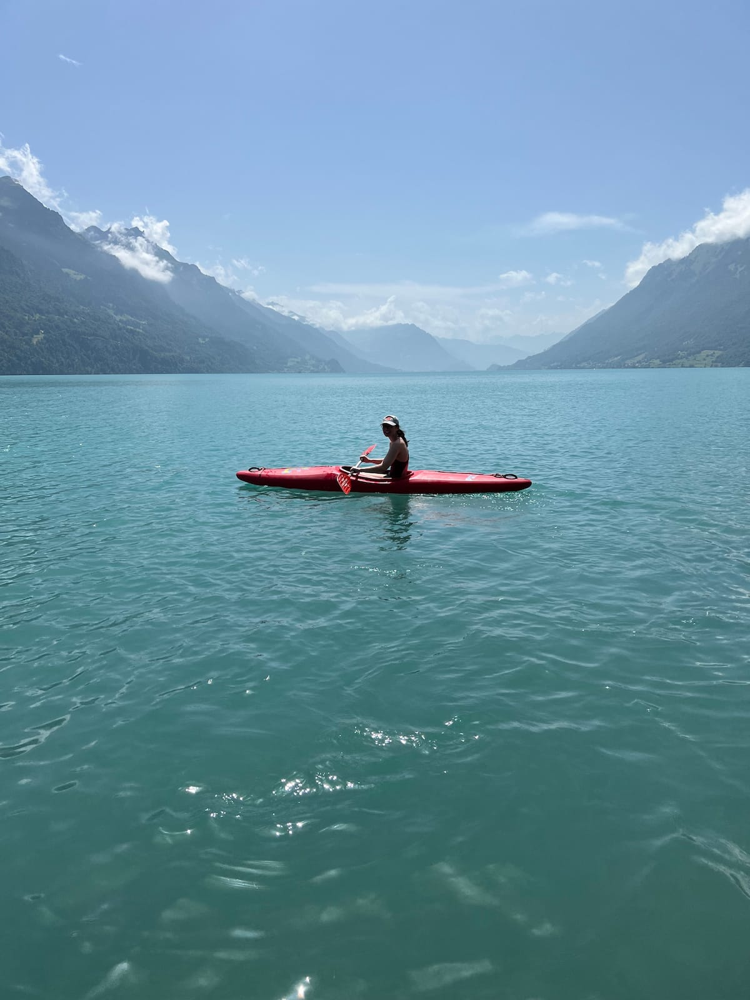
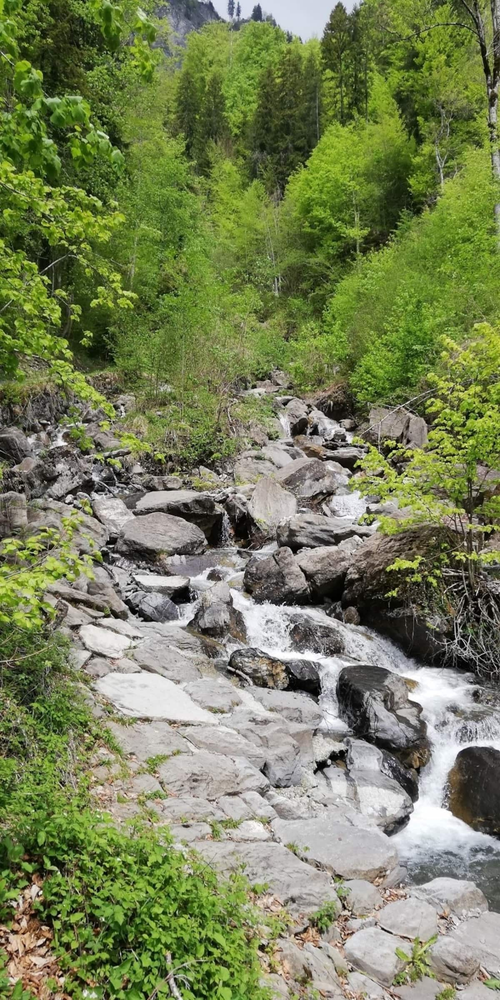
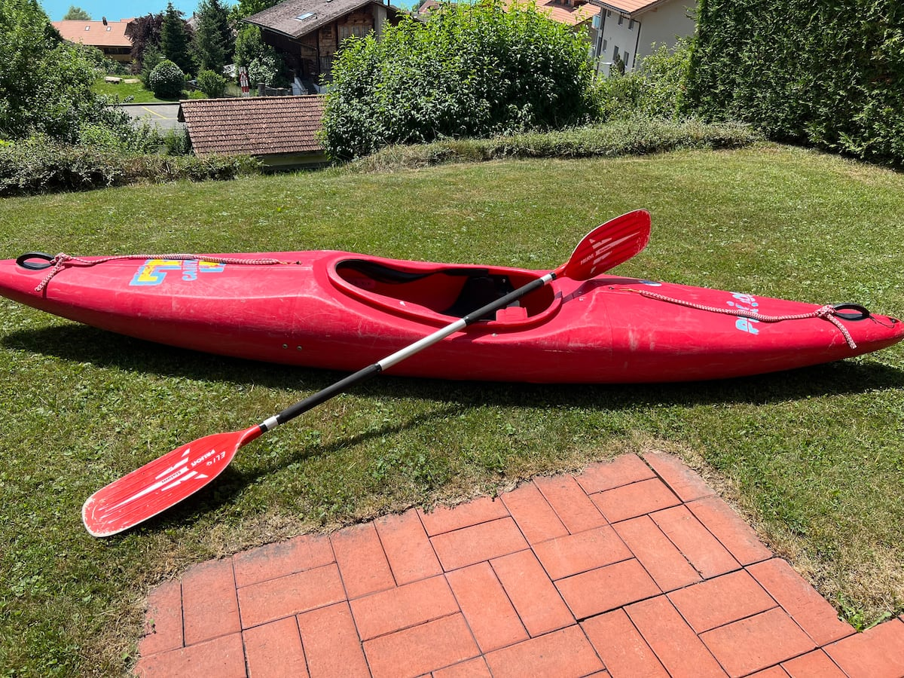
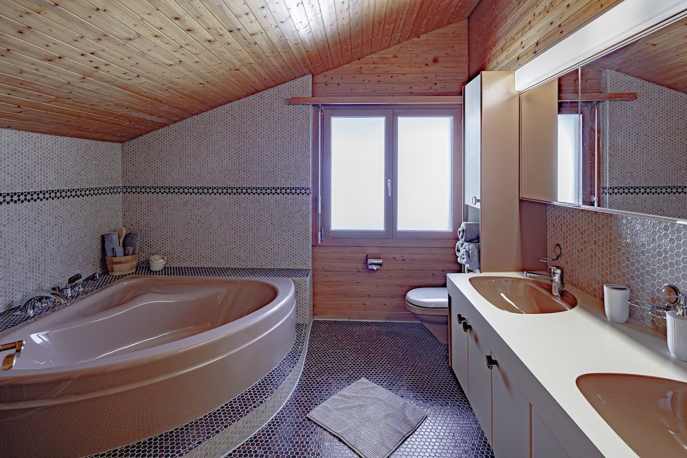

Private apartment · Garden level
The garden apartment
A comfortable, self-contained base for couples and small families, close to the lake and ready for days throughout central Switzerland.
About this stay
Your private base by the lake.
Experience Switzerland from a historic village on turquoise Lake Brienz.
This comfortably furnished apartment has a garden terrace and mountain views in a quiet neighborhood, a few blocks from Brienz’s old town and traditional Swiss chalets. It is about five minutes downhill to the lake, swimming, groceries and restaurants, and around ten minutes back uphill.
Free parking on the premises makes the apartment a convenient base for exploring Lucerne, Interlaken and the Jungfrau region.
Inside the apartment




What the apartment offers
Amenities are based on the current Airbnb listing. Availability and exact details should be confirmed for your dates.
Views & outdoors
- Lake, mountain, garden and valley views
- Lake access
- Private patio or balcony
- Private backyard
- Outdoor furniture and dining area
- Electric BBQ grill
- Kayak
Kitchen & dining
- Equipped private kitchen
- Refrigerator with built-in deep freezer
- Electric stove and oven
- Microwave
- Nespresso coffee maker and kettle
- Cookware, dishes and wine glasses
- Toaster and rice maker
Comfort
- Fast Wi-Fi, approximately 90 Mbps
- Dedicated workspace
- Central heating and portable fans
- 50-inch HDTV with streaming services
- Books, reading material and board games
- Room-darkening shades
- Cleaning products and essentials
Bedroom & laundry
- Bed linens, hangers and wardrobe
- Extra pillows and blankets
- Free washer and dryer in building
- Iron and drying rack
- Mosquito nets
- Hair dryer
- Shampoo, conditioner and body soap
For families
- Crib and travel crib on request
- High chair and baby bath on request
- Children’s books and toys
- Children’s dinnerware
- Babysitter recommendations
Access & safety
- Private entrance
- One free driveway parking space
- Self check-in with keypad
- Luggage drop-off allowed
- Long-term stays allowed
- Smoke and carbon monoxide alarms
- First aid kit
Plan your stay
Ask about dates and pricing.
Pricing is provided by direct inquiry. For a quick availability check, use the live Airbnb calendar.